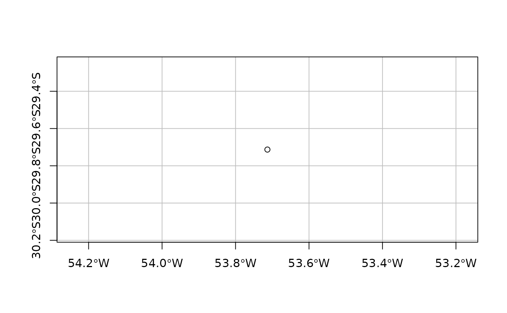

Set spatial coordinates and coordinate reference system (CRS) to a set of soil observations.
febr2sf(obj)Object of class data.frame downloaded from the FEBR Soil Data Repository using
observation().
An object of class sfc_POINT (single soil observation) or sfc_MULTIPOINT (multiple
soil observations).
Create an sf object from the observation ("observacao") table of one or more standardized datasets contained in the FEBR Soil Data Repository, https://www.pedometria.org/febr/.
Pebesma, E., 2018. Simple Features for R: Standardized Support for Spatial Vector Data. The R Journal 10 (1), 439-446, https://doi.org/10.32614/RJ-2018-009
res <- observation(
data.set = "ctb0013",
progress = FALSE, verbose = FALSE)
res <- febr2sf(obj = res)
#> Loading required namespace: sf
plot(res["geometry"], axes = TRUE, graticule = TRUE)
